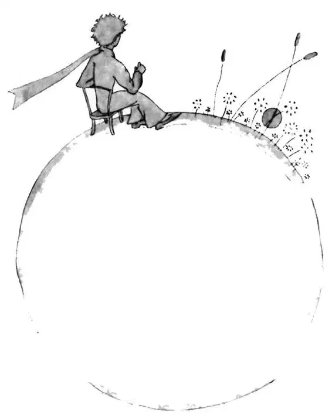

CHAPTER 6
第六章

—the little prince and the narrator talk about sunsets
——小王子和叙述者谈论日落
Oh, little prince! Bit by bit I came to understand the secrets of your sad little life... For a long time you had found your only entertainment in the quiet pleasure of looking at the sunset. I learned that new detail on the morning of the fourth day, when you said to me:
噢，小王子！一点一点地，我知道了你这悲伤的小东西的秘密……长久以来，你唯一的乐趣就是一个人静悄悄地观看日落。第四天早上，我知道了这个新的细节。当时你跟我说：
"I am very fond of sunsets. Come, let us go look at a sunset now."
“我非常喜欢日落。来，现在我们一起去看日落吧。”
"But we must wait," I said.
“可是我们必须等着。”我说。
"Wait? For what?"
“等？等什么呢？”
"For the sunset. We must wait until it is time."
“等日落呀。我们必须等到了时间才能看啊。”
At first you seemed to be very much surprised. And then you laughed to yourself. You said to me:
一开始，你似乎非常地吃惊。之后，你便自顾自地大笑起来。你对我说：
"I am always thinking that I am at home!"
“我总是以为我是在家里呢！”
Just so. Everybody knows that when it is noon in the United States the sun is setting over France.
就是这样。众所周之，美国正午时分时，法国则正值日落。
If you could fly to France in one minute, you could go straight into the sunset, right from noon. Unfortunately, France is too far away for that. But on your tiny planet, my little prince, all you need do is move your chair a few steps. You can see the day end and the twilight falling whenever you like...
如果你能在一分钟之内飞到法国，你就能直接从正午跳到日落了。很可惜，法国真是太遥远了。可是在你的小小星球上，我的小王子，你只需要把椅子搬几步远就可以做到。只要什么时候想看，你就能看到白天结束，看到夜幕降临……
"One day," you said to me, "I saw the sunset forty-four times!”
“有一天，”你告诉我，“我看到了四十四次日落！”
And a little later you added:
过了一会，你又跟我说：
"You know—one loves the sunset, when one is so sad...”
“你知道，人在伤心难过的时候才会喜欢看日落……”
"Were you so sad, then?" I asked, "on the day of the forty-four sunsets?”
“那时你有这么悲伤吗？”我问道，“就是在看了四十四次日落的那天？”
But the little prince made no reply.
可小王子却没有回答。